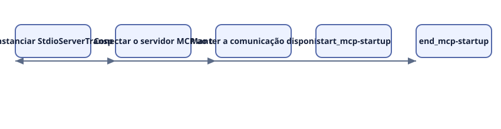
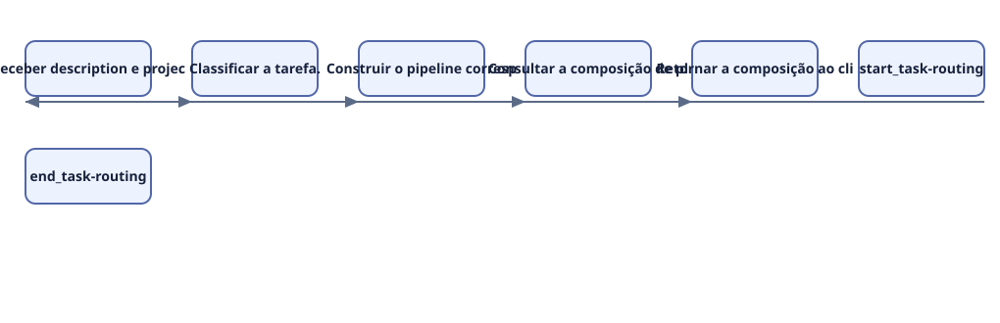
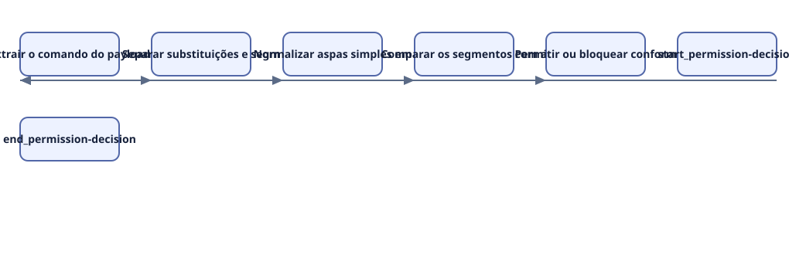

Workflows e fluxos
Leitura estática de quatorze arquivos: dez arquivos de código do núcleo MCP, proteção de ferramentas, entrypoint e schema de template, mais quatro manifestos/configurações auxiliares. Regras operacionais do kit são separadas de exemplos de aplicação; não há afirmação de produto ou RPA implantado.
Os fluxos revisados cobrem a inicialização do servidor MCP, o consumo de uma ferramenta pelo agente e a decisão do guard de comandos. São fluxos estáticos; não representam uma sessão de produção.
mcp-startup — Inicialização do servidor MCP via stdio
Disparador: O processo do servidor é iniciado pelo entrypoint compilado.
Atores: Cliente MCP e processo Node do servidor
Passos:
- Instanciar StdioServerTransport.
- Conectar o servidor MCP ao transporte stdio.
- Manter a comunicação disponível para o cliente.
Sucesso: O servidor conecta sem erro e registra a mensagem de execução.
Falha, retry ou exceção: Falha de inicialização cai no catch de main e termina o processo com exit 1; não há prova de execução nesta análise.
Confiança: observed

Ver fonte Mermaid
flowchart LR start_mcp-startup([O processo do servidor é iniciado pelo entrypoint compilado.]) step_mcp-startup_0[Instanciar StdioServerTransport.] step_mcp-startup_1[Conectar o servidor MCP ao transporte stdio.] step_mcp-startup_2[Manter a comunicação disponível para o cliente.] end_mcp-startup([O servidor conecta sem erro e registra a mensagem de execução.]) start_mcp-startup --> step_mcp-startup_0 step_mcp-startup_0 --> step_mcp-startup_1 step_mcp-startup_1 --> step_mcp-startup_2 step_mcp-startup_2 --> end_mcp-startup
evidence: mcp-server/src/index.ts:1505
task-routing — Roteamento de uma tarefa para pipeline e plugins
Disparador: O cliente chama a ferramenta devkit_route_task com uma descrição.
Atores: Cliente MCP, classifier, pipeline engine e plugin router
Passos:
- Receber description e project_context opcionais.
- Classificar a tarefa.
- Construir o pipeline correspondente.
- Consultar a composição de plugins.
- Retornar a composição ao cliente.
Sucesso: O resultado contém o tipo, as etapas do pipeline e a composição roteada.
Falha, retry ou exceção: Falhas do roteador ou de dependências podem rejeitar a chamada; o contrato de erro completo não foi revisado nesta amostra.
Confiança: observed

Ver fonte Mermaid
flowchart LR start_task-routing([O cliente chama a ferramenta devkit_route_task com uma descrição.]) step_task-routing_0[Receber description e project_context opcionais.] step_task-routing_1[Classificar a tarefa.] step_task-routing_2[Construir o pipeline correspondente.] step_task-routing_3[Consultar a composição de plugins.] step_task-routing_4[Retornar a composição ao cliente.] end_task-routing([O resultado contém o tipo, as etapas do pipeline e a composição rotead]) start_task-routing --> step_task-routing_0 step_task-routing_0 --> step_task-routing_1 step_task-routing_1 --> step_task-routing_2 step_task-routing_2 --> step_task-routing_3 step_task-routing_3 --> step_task-routing_4 step_task-routing_4 --> end_task-routing
evidence: mcp-server/src/index.ts:70
permission-decision — Decomposição de comando para decisão do guard
Disparador: O hook recebe um evento Bash com comando composto.
Atores: Hook de permissão e comando Bash
Passos:
- Extrair o comando do payload do hook.
- Separar substituições e segmentos shell.
- Normalizar aspas simples em barewords.
- Comparar os segmentos com a escada de permissões.
- Permitir ou bloquear conforme a regra encontrada.
Sucesso: Uma decisão estruturada é escrita no stdout quando o hook está habilitado.
Falha, retry ou exceção: Payload inválido ou configuração desabilitada segue pelo caminho allow; a precedência de múltiplas regras permanece uma melhoria registrada.
Confiança: observed

Ver fonte Mermaid
flowchart LR start_permission-decision([O hook recebe um evento Bash com comando composto.]) step_permission-decision_0[Extrair o comando do payload do hook.] step_permission-decision_1[Separar substituições e segmentos shell.] step_permission-decision_2[Normalizar aspas simples em barewords.] step_permission-decision_3[Comparar os segmentos com a escada de permissões.] step_permission-decision_4[Permitir ou bloquear conforme a regra encontrada.] end_permission-decision([Uma decisão estruturada é escrita no stdout quando o hook está habilit]) start_permission-decision --> step_permission-decision_0 step_permission-decision_0 --> step_permission-decision_1 step_permission-decision_1 --> step_permission-decision_2 step_permission-decision_2 --> step_permission-decision_3 step_permission-decision_3 --> step_permission-decision_4 step_permission-decision_4 --> end_permission-decision
evidence: hooks/scripts/permission-ladder-guard.mjs:116
Lacunas
- Não há evidência de uma chamada MCP real, de timeout/retry de ferramenta ou de execução de uma automação externa.
- Fluxos de autenticação do app consumidor não foram tratados como fluxo do servidor MCP.